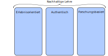

Forschungs- und Lehrkonzept
Max Wiebicke
Forschungskonzept

Forschungskultur
- Seminarreihe mit eingeladenen Geotechnikern
- Organisation von internationalen Workshops und Doktorandenschulen
- Anbindung an ALERT Geomaterials
- Doppelabschlüsse für Doktoranden
- Nationaler und Internationaler Austausch
Lehrkonzept

Interaktivität
Am Beispiel einer Übung zu Stoffmodellen in der Bodenmechanik
Kurzfristige Ziele
- Review der derzeitigen Lehre / Durchführung
- Vereinheitlichung der Lehre im Institut (und darüber hinaus)
- Interaktion mit Studenten
- Nutzung von Open Source Software (Python, ...)
Langfristige Ziele
- Anpassung an Forschung und Expertise
- Stoffmodelle und Numerische Methoden ausbauen
- Modul (oder Teilmodul) zur quantitativen Bildanalyse
- Umgang mit beschränkten Datensätzen